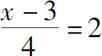
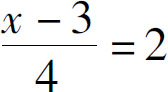
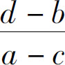

前面，我们讨论了等式三个基本性质：反身性、传递性和协变性，同时我们还利用等式的协变性，求解了一个简单的一元一次方程．接下来，我们就利用这些性质来继续探讨一下方程的解法．根据等式的协变性，等式的左右两边经过了同样的计算过程，等式仍然成立，那么如果一个方程式很复杂，我们应该如何实现逐步化简呢？先让我们看一个简单的方程式：3＝5－x ．
解方程就是要把方程式变成“x ＝_____”的形式，也就是说，要把变量移动到方程的左边，而常数项移动到方程的右边，那怎么样来实现移动呢？根据等式的协变性，在方程左右两侧同时加上或者同时减去一个项，就可以把多余的项目消掉．首先，把方程式左右两侧都加上x ，左边变成了x ＋3，右边是5－x ＋x ＝5，也就是x ＋3＝5；为了消去左边的3，再把方程式左右两边同时减去3，左边变成了x ，右边变成了5－3＝2．最终结果仍然是x ＝2．
这个题目我们在前面已经处理过了，但是如果我们仔细回顾一下这两个题目就会发现，如果算式一边存在多余的加项，我们就可以在等式的左右两边同时减去它，如果算式一边存在多余的减项，我们就可以在等式的左右两边同时加上它．这个过程相当于把我们这个多余的项从方程的一边移动到了另一边，只不过把它移动到另一边以后，需要把加减号变化一下．这种处理办法就是简化方程式的最常用的办法，因为我们要把方程式中的某一项移动到另一边，所以这个操作就叫作移项．移项的关键在于，移项以后要注意改变加减符号．
下面我们用移项法解决一个问题：2x ＋5＝x ＋7．
我们利用移项的办法把5从方程的左侧移动到右侧，移项后变成－5，于是方程变为：2x ＝x ＋7－5．再把方程式右侧的x 从右边移动到左边，移动后变为－x ，方程变为：2x －x ＝7－5．
在小学的时候我们就知道2x －x ＝x ，这个操作的目的是把多个含有x 的项合并到一起，所以叫作合并同类项．合并同类项是方程求解的第二个常用手段，显而易见，它的目的是实现项的合并，在移项完成后，我们需要把左侧含有变量的项合并成一个，右侧不含变量的常数项也计算出来，最终得到答案，x ＝2．
接下来，我们继续处理一个问题：3x －7＝5＋x ．
我们知道，通过移项可以把x 从右侧移动到左侧，变成－x ，把－7移动到方程式右侧变为＋7，于是我们得到3x －x ＝5＋7，把左右两侧分别合并同类项，得到：2x ＝12．x 前面有一个系数2，它表示有两个x ，那么，我们就可以利用方程的协变性，把方程的左右两侧同时除以2，得到x ＝6．方程左右两侧同时除以变量的系数，这是方程式化简的最后一步，这一步操作没有特殊的名称，一般我们就直接把它叫作系数化简．
以上，我们根据等式的协变性，得出了一元一次方程的三个常用化简方法：移项、合并同类项、系数化简．实际上这三种办法在小学的时候我们已经接触了，只不过当时我们没有对它们进行系统地分析．那么，这三个步骤有什么顺序吗？当遇到一个具体问题的时候，我们怎么知道先使用哪种方法呢？这就是本节我们要研究的核心内容，这个世界运动变化的可逆性．什么叫可逆性？通俗地说就是：进两步退两步等于没走！这个规律表现在数学上就是：任何一个数值，经过了一系列计算以后，再经过与之相反的一系列计算，还能得到原来的数值．
比如，2＋3以后，我们再减去3，还能够得到原来的2，为什么会这样呢？因为加和减这两个动作是相反的，因此我们称加减法互为逆运算，所以一个数加上任何一个别的数以后再减去它，值不变．同理，乘除也是互为逆运算的，因此也符合这个规律，只要乘除的数字不为0就可以．那么，这个可逆原理怎么用在解方程上呢？很简单，当我们在解方程的时候，只要知道变量x 依次经过了哪些变化，我们就可以按照与之相反的顺序把它还原成原来的x ．
比如：3x －2＝4．我们先看方程式的左边：3x －2，这个算式是由x 先乘了3，再减去2得到的，那么，我们怎么样把整个算式变回原来的x 去呢？很简单，只要按照与原来完全相反的顺序操作就可以了，3x －2是x 先乘了3，那我们就后除以3，它是后减去的2，那我们就先加上2．注意，因为我们是在解方程，所以这方程式的左边怎么做，右边就得怎么操作才行．
接下来，我们就按照这个思路解题了：3x －2＝4方程左右两边先加上2，得到3x ＝6；再把方程左右两边都除以3，得到x ＝2．
按照这个思路做题，是不是一下子就找到问题的出路了？
接下来，我们再做一道题：

．这个方程的左边x 先减3，减完了以后再除以4．那么，解题步骤就反过来，先乘以4，再加上3．

，方程左右两边乘以4，得到x －3＝8，方程左右两边再加上3，得到x ＝11．那么，如果方程式的左右两边都有x ，应该怎么办呢？我们就应该站在整个等式的立场上，这个两边都有x 的方程式，一定是从简单的等式变化过去的．在变化的过程中呢？一定是从左边移动了几个x 到右侧，那怎么办？与之相反，我们就先把右侧的x 移动到左边来．比如：2x ＋5＝x ＋7．我们一看，这个方程两边都有x ，那就把右边的x 项挪到左边，得到x ＋5＝7．这样一来，只有方程的左边有x 了，我们一看，这x 是因为加了5才变成7的，要找到原来的x ，就做个逆运算，两边都减去5，也就得到了最终结果：x ＝2．
最后，我们再来看一道复杂点的题目：a x ＋b ＝cx ＋d（a ≠c）．
虽然题目里都是字母，但是x 表示的是未知数，a、 b 、c 、d 表示的是常数，所以，只要把x 移到左边，把a、 b 、c 、d 都移到右边，这个题目就算做出来了．我们就先移动一下吧：a x ＋b ＝c x ＋d 方程左边多个＋b ，把b 移动到方程的右边，得到a x ＝c x ＋d －b ，右边了多了个c x ，我们把它移动到方程的左边，得到a x －c x ＝d －b ．然后我们把左边的x 合并一下，得到（a －c ）x ＝d －b ，左边的x 还多一个a －c 的系数，就用除法把它去掉，于是得到最终结果：

．方程在实际的工作和生活中表示的就是一种等量关系，它为我们描述了这个世界运动变化的基本规律，让我们认识世界成为可能．本节介绍了一元一次方程的解法．运用等式的协变性和可逆性，我们就可以在一个等式加减乘除不断地变化中，不断简化，从而得到最终结果．
在本节的最后，我们要留下这样一个思考题：
有一天，你从大街上花了10元钱买了一只鸡，而后被人用11元买走了你的鸡，卖完以后，当你再想拿着钱重新买只鸡的时候发现，市场上的鸡已经12元一只了，请问，你到底是赔了1元呢，还是赚了1元呢？